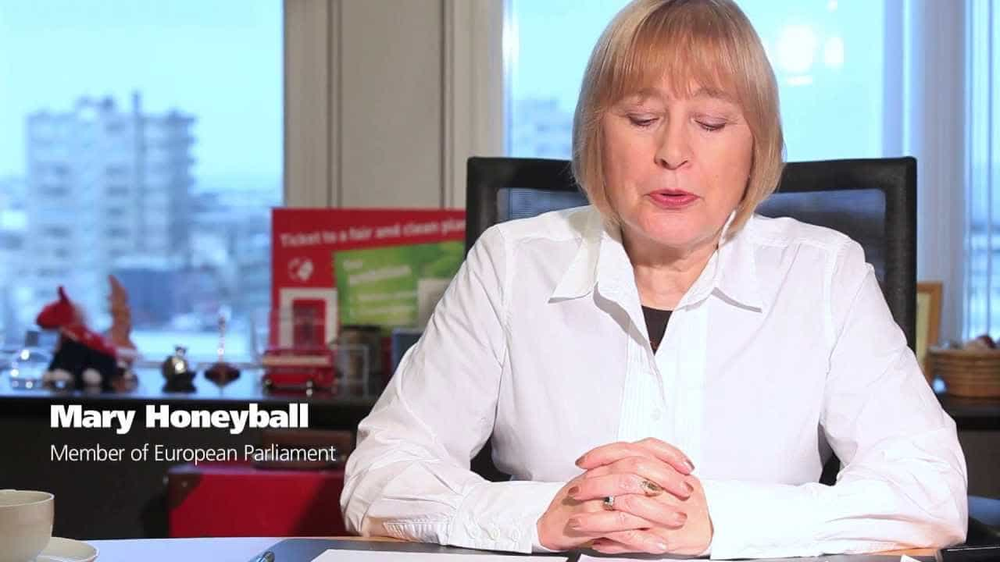

In a revelation to be dropped within a day or two, a reliable source has told us that a London newspaper will report that Mary Honeyball, a UK Labour Party Member of the European Parliament (MEP), will propose that Roosh and any organizer of the ROK meetups face bans or “visa restrictions” upon trying to enter the EU.
Honeyball intends to outright lie and deceive members of the EU Parliament by portraying ROK as a “pro-rape” group presenting an imminent sexual assault danger to all European women. All this comes as Honeyball and her mainstream colleagues in the European Parliament and other national legislatures do nothing to combat the epidemic of migrant rapes striking Europe and its women.
Our source has stated that Mary Honeyball will present a letter demanding visa restrictions for Roosh and ROK readers who reveal themselves as meetup organizers. As far as we can work out, she will be attaching not a shred of factually based evidence that correlates with or proves the notion that any men involved with the February 6 meetups planned to do anything more than legally gather for beers or other beverages with fellow ROK readers.
Never letting facts get in the way of an attempt to distract attention from the real rape culture being unleashed by undeserving new arrivals to Europe, Honeyball and those of her ilk have chosen to willfully disregard outlets such as Snopes. This fact-checking website conclusively refuted the outright lie that the ROK meetups were being orchestrated to somehow facilitate rapes by our readers.
Forgetting how utterly counterintuitive any hypothetical “call to rape” would be, the only “evidence” Honeyball can resort to is a satirical article by Roosh. With that in mind, I am surprised that Honeyball has not already passed a motion in the European Parliament calling for the posthumous conviction of Jonathan Swift for inciting ethnic cleansing through the infanticide of Irish babies sent to England to increase the food supply. While we are at it, let us dig up his grave and send his remains to The Hague so we can try what is left of his corpse for hate speech.
Mary Honeyball and her radical feminist leanings
Unsurprisingly, Mary Honeyball supports self-aggrandizing and grandma-hating lawyer Charlotte Proudman. She even looks like Proudman’s mother.
Honeyball’s espousal of plain moronic feminist positions goes back a long way, yet one of her worst policy proposals is more recent. In 2014, a majority of the European Parliament backed her call to criminalize the buying of sex but not its sale by women. It seems Honeyball is not aware of or deliberately ignores the countless middle and upper middle-class British women in her MEP region of London who sell their bodies on the street, in brothels, or via sites such as SeekingArrangement.com. I encourage her to peruse Seeking Arrangement using a male profile and tell me if twenty-something young women looking for jewelry, travel, and other expensive gifts are really “forced” into de facto sex work and sexual commercialization, or if they rather gleefully choose it.
Consequently, if a feminist MEP like Mary Honeyball thinks that all female sexual workers are criminally compelled to spread their legs for profit, and that male purchasers of sex should all be criminals, we cannot expect her to rationally or honestly characterize a website like ours. After all, we call into question the constant vitiation of female responsibility by society that she wants to see legally eliminated.
Honeyball’s activities in the European Parliament’s Committee on Women’s Rights and Gender Equality is a testament to this: on “issues” such as the mythical gender pay gap, Honeyball has routinely used bogus figures, including glossing over the higher average hours worked by men and the types of industries they enter in greater numbers. Her other proclivities include supporting Emily’s List, which strangely demands female quotas for voluntary political candidate positions, and praising self-aggrandizing Charlotte Proudman, the barrister who tried to globally shame a man as a supposed sexual predator for saying she looked attractive in a private message.
The suffocation of free speech in the European Union

…and anti-peaceful free speech bigot.
As the borders around the EU are made porous and even irrelevant, not just the borders between member states, the range of acceptable discussion is being progressively curtailed. Roosh is a target for vilification because he opposes both the privileges of feminist women and the covered-up behavior of unrestricted migrants, whose presence in Europe is further existentially draining once proud nations like Germany and Sweden.
Roosh cannot be silenced by conventional feminist retorts like “misogynist” that are used to compel men to stop their criticisms on pain of being social pariahs and subsequently unemployable. So now Mary Honeyball will move to demand physical restrictions on Roosh’s movements and those of the meetup organizers through obvious lies, all because he has the audacity to stand by opinions poor Mary does not like. Expect more of these measures in the next few years, as greater numbers of men come out and challenge the powers that be. Truly draconian policies of containment will soon be in full swing as feminists and their mainstream political enablers are forced into additional narrative-saving damage control.
Roosh is a distraction from EU politicians having to deal with rapist migrants and economic collapse
Roosh is inherently valuable to status quo politicians in the European Union, the Mary Honeyballs most of all. He excites rabid feminists and is the perfect surrogate for their rage. SJWs are totally unwilling to clamp down on the sacred cows known as illegal migrants and “refugees.” They are flummoxed, too, about how to counteract the Euro currency-inspired economic devastation they have wrought upon tens of millions of ordinary Europeans. So what better way to draw attention away from the Rapelympic Games ravaging the European heartland and other tragedies than trying to savage an anti-feminist man falsely accused of promoting rape?
The EU is also completely dumbstruck about how to defend European cities from the next Bataclan-style Islamist terrorist mass murders. So far, the best countermeasure we have against the countless planned bullets and bombs of ISIS and al-Qaeda is Facebook’s French flag profile photo option. They cannot find the real guys of mostly Middle Eastern and North African origin plotting the most heinous acts of public killing, so thumb-twiddling MEPs can instead chase after a secular Iranian/Armenian-American named Roosh who is vaguely brown-looking and teaches men how to better themselves. Go Team EU! Banning Roosh and ROK readers will make Europe safe again!
Are we a genuine threat to establishment?
Note the paradox of European, American, Canadian and Australian politicians doing everything they can to excoriate Roosh by saying he is “small-fry,” such as pointing to the plain fabricated allegation that he lives in his mother’s basement. If he and his ideas are so insignificant, why are they being repressed by dozens of national and other politicians, plus over 1,600 mainstream news articles recently? What are they getting out of this 1984-style Two Month (or Two Year) Hate, other than absolving themselves of their own inadequacies in not fixing widespread economic and social malaise?
I do not want to and will not paint all European Parliament Members with the same broad brush. For a start, the presence of the representatives of over two dozen EU member states, which each bring their own somewhat or very divided political cultures, makes the Parliament more of a mess than a monolithic vehicle of political correctness. Secondly, the rise of alternative, narrative-challenging parties means that an ever larger chunk of dissident voices can be found in Brussels. Even so, the Mary Honeyballs in the European Parliament are far too numerous and their pernicious influence is far too great. Her move to restrict the travel of Roosh or ROK readers to Europe is a stark warning of things to come. Are you next, merely because your political positions are not like hers?
Spread the word
Non-violent free speech is what Mary Honeyball really likes… so long as it does not disagree with her views. Then it is “hate speech.”
Every day, migrants are streaming into Europe. ISIS has commanded its followers to join them. This is the sort of real crisis the European Parliament needs to deal with, in addition to protecting the vital social cohesion of European states from the hordes of non-terrorist arrivals. We call upon all our readers to make the unfounded nature of these accusations against us more widely known. ROK has not been linked with any violence and we are simply convenient scapegoats for the perpetual failures of the European political class.
If peaceful freedom of speech is now a trigger for unjustified persecution and very targeted restrictions of movement, what exactly does the European Union stand for?
Read More: Europe Is On The Precipice